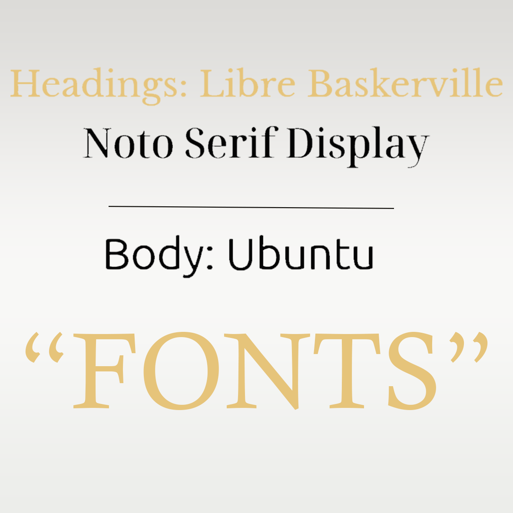

General Information
This website was created by…
- Lise de Vree (ID: 213006)
- Vince Kazen (ID: 212406)
- Jesse Konings (ID: 213895)
- Kyanni Atmopawiro (ID: 213138)
Content
| # | Student ID | Value | Name and link of content |
|---|---|---|---|
| 1. | Kyanni Atmopawiro | Self-Love | Self-Love |
| 2. | Vince Kazen | Unapologetic | Unapologetic |
| 3. | Jesse Konings | Independence | Independence |
| 4. | Lise de Vree | Strength | Strength |
Production
Design Elements
Please provide a list of design elements alongside their justifications:
-
Our color scheme:
- #FABC3C The main color, yellow which resembles gold, is used all across our website. Gold stands for luxury, success, achievement. It is also a bold, strong color that fits our values of strength, unapologetic, self-love and independence. Gold is the perfect balance between feminine, bold and luxury. Finally, Gold is often associated with luxurious, premium jewelry which is what we are also offering.
- #272727 This customized version of black is used in headings, our logo and decorations of pictures, columns and rows. It stands for power and elegance, which both fit our brand values and product seamlessly.
- #f5f5f5 This customized version of white is used in decorations and our logo. It is a bit softer white, which allows it to work better with the other colors on our website. Finally, it helps to break up the darker colours of black, gold and brown which allows our website to not look too dark.
- #4a3821 Brown symbolizes warmth and security. it is implemented in our logos and These elements relate closely to our brand, since our product is meant to help women express and appreciate who they are and what they stand for. Furthermore, the brown matches with the gold and adds to the luxurious, premium feel of the brand.
- #FFF1AB The secondary yellow color is used for the color of the body's background. It is a softer pastel which resembles gold. it is subtle and works well with the brown and main gold color. Again, it fits with the luxurious and premium feel of our brand.
- Font choices
- 
- User interface patterns (e.g. grids, carousels, menu organizations etc.)
- The structure of the navigation and content (e.g. how content units are distributed across pages)
The FemmeForward Heading fonts are strong, bold and luxurious looking fonts that represent what we stand for. The body font of Ubuntu is a bit softer with rounded edges, to emphasize the feminine target group of our brand.
a.
The dark brown navigation bar is present on all pages of the website. It gives a first impression to the users. This serves to make all pages of the website easily accessible for the users. The white image on the navigation bar serves to make our brand logo stand out to the users. We added a yellow shadow which resembles a glow to resemble the hint of gold on our jewelry.
The yellow text and lines are used in the navigation bar are used to show separation between the different pages. They stand out in contrast to the dark brown. When you hover over the text in the navigation bar, the text turns black to accentuate what you are viewing.
The button on the navigation bar serves to make known to our users that they can donate to our cause. The lighter color in comparison to the brown helps the button to stand out and instigate curiosity about what they are donating to and makes donating accessible for the users.
Buttons with the same style are used throughout the website to keep a cohesive visual of buttons. When you hover over them, there is an outline and and the text turns white. This is to make clear that it is a clickable button.
When you are on a page, the text turns white and there is a yellow underline. The colors used for these elements stand out from the brown and makes clear to the user what page they are currently on.
The carousel on the home page serves to make known to the users what product we are offering at first glance. The use of white feels clean and brings attention to the black and gold jewelry and the yellow text in the image.
We used cards to make it clear to the user that we have two different tiers. The carousel in the cards on the Support us page is used as an element to visualize the rewards we will give to the possible investors to the best of our abilities and make attractive.
We made individual borders with yellow accents and shadows and white background to make the titles stand out from regular text. We also used this for the values to make clear what we stand for as a brand. This is a similar border used for the cards on the Support us page.
b. On the home page, there is a carousel to make clear to the consumer what our products are and instigate curiosity.
There have a picture of a woman from our target audience and an explanation of who we are as a brand and a link to the about us page for them to learn more about who we are and what we stand for. Directly under, there is a picture of our product demo and an explanation of the product that we offer. This is to give the consumer an idea of the product we are raising funds to create. There is also a link directing them to the Support us Page so they get more information about hwy they should support us and how they can do this.
On the about us page, there is our vision at the top, so that the users get a direct idea of what we stand for. Directly under that there are our values in blocks to accentuate what is really important to us. After this we have photos of the team to create a sense of trustworthiness towards our audience, under which there are working links to our social media websites, so the consumers have direct access to follow us on these pages.
On the Support Us page, there is an option with two cards to pick your tier. This makes clear to the investor that there are multiple options to invest in our brand. With a working donate button for the consumers to choose the amount they would like to donate. Under this, there is some information on why they should invest in our brand and a description of our products, so they feel more compelled to donate to our cause.
Credits
- HTML template from buas-media-interactive/prj4-group-template)
- The source code was provided by the “Bootstrap” library: getbootstrap.com/docs
- Images were provided by Unsplash.
Testing Report
In order to test our website, we have conducted 4 sessions of testing. The testing was conducted on a desktop, laptop and phone to make sure our testing results would provide us with as much information as possible. All testing sessions were done with our final website.
testing goals:
Our testing goals can be split up into 2 parts, the UX and the UI.
- For the testing of the UX, our goal was to find out what our users felt while interacting with our website. For example: is the design confusing? does it look nice? is it clear what our website is about at first glace?
- For the testing of the UI, our goals were to find our whether all website elements were functioning properly, if the website works on different devices and if the design of the website was clear and easy to use.
Testing methods:
testing participants: We used a total of 4 testing participants for our website testing. Due to a lack of time, we were able to only conduct testing on 2 people that matched with our target audience. However, the other 2 testing participants were still given the same instructions and the testing still provided valuable and useful information for us.
Test setting:
- participant 1: Testing was done remotely. The testing was done on an Iphone X in Google Chrome. The testing participant was given instructions and was asked questions via Discord (Online video calling service). Since this testing session was done on a phone and the website was coded for PC, this testing was video recorded to see the reactions of the testing participant and display of the website on their phone screen.
- Testing participant 2: Testing was done remotely. The testing was done on a laptop on Google Chrome. The audio of the testing has been recorded. She was given instructions to navigate through our website and was asked questions about our website.
- testing participant 3: Testing was done at campus, in person. It was done on a laptop using Google Chrome. They were given instructions to navigate through our website and was asked questions about our website.
- testing participant 4: Testing was done at campus, in person. It was done on a laptop using FireFox. They were given instructions to navigate through our website and was asked questions about our website.
Testing protocol
During every testing session, testing participants were asked what kind of emotions, reactions or feelings they were experiencing while viewing our website. (e.g. By viewing our landing page only, could you tell me what our website is about and whatour brand stands for? What do you think about the color palette? what do you think about the decorations? is it inviting to read? Is it confusing? etc.)
Additionally, they were given multiple simple tasks to navigate through our website and find a specific element on the website. (e.g. Find our instagram page, Find the pictures about the team, If you were to donate, how would you be able to do that? become a premium member, please? Please find our vision, please find the “independence” value? can you tell the difference between the advantages of being an investor and premium investor? etc.)
Testing results
After each finding, there are numbers. For example, when theres a 1 and a 2 after a finding, that means that that finding was derived from the testing session with participant 1 and 2.
From all the testing sessions, we have concluded the following positive UI/UX elements, ranked from most important to least important:
- Navigating through our website was easy and clear, thanks to the limited amount of options in our navbar and the compact paragraphs of text. (UI / UX) 1, 2, 3, 4
- They were able to recognize that our product was jewelry by just looking at our landing page (thanks to the carousel and the text). (UX) 1, 2 ,3
- Good amount of information available on the website and it is inviting to read (not too long pieces of text) 1, 2
- Donation page was easy to find thanks to the big call to action button (UI). 2, 3 ,4
- They were able to tell our brand was about strong, women by looking at our landing page only. (UX) 1
- difference between Investor and Premium Investor is clear (UX) 1, 3, 4
- Liked the color palette and the consistency of our style guide. (UX) 1 ,2
- Found it nice that the social media logo buttons directed them to our social media pages (UX, UI) 1, 3
- Really liked the carousel (UX) 1, 3
From all the testing sessions, we have concluded the following negative UI/UX elements, ranked from most important to least important:
- Website looks different and doesn’t function 100% properly on a phone (“Donate” button in the navbar is barely visible, some details get lost on the phone’s display such as the lines under text, pictures / text boxes are not positioned correctly) 1
- No clear “Products” page is in the Navbar (UI) which caused confusion (UX) 3, 4
- Website doesn’t look very professional (UX) 4
- The colors themselves didn’t tell her that our brand was a women’s brand. (UI & UX )2
- Couldn’t always immediately recognize that the vision was on top of the about us page, since it doesn’t say “our vision” anywhere. (UX) 1
- A price range would be better for the funding tiers, a fixed price is confusing (UX) 2
Improvements that would be made in the future, with more time and knowledge to our availability:
- Fix the display of the website on phones (properly position buttons so that they’re clearly visible, make sure all pictures and text are properly positioned on the website and make it look pretty, just like on desktop)
- Make it more clear that the first paragraph of text on our about us page is the brand vision by adding a heading to it.
- Add social media hyperlinks to buttons and adding them to the navbar to make it easier for the customers to find our social media pages.
- Make a more clear navigation in the navbar to read more about our products by adding a separate button / link for it.
- Make it even more clear on the landing page that this is a FUNDING website rather than a functioning webshop by reworking the design of the landing page, perhaps add a banner on top of the page that makes it clear.
Marketing
Context of campaign and promotional activities
Our campaign is visualising the strength of being a strong individual woman. We want single middle aged women to unite and feel acknowledged. The main message that we want to spread is that they don’t need a men to be successful in life. For this, we made a instagram and facebook page where we posts quotes and messages, so our audience will feel heard and can relate to that. Via our social media we bring them to our website, where they can fund us by buying our personal jewlery, that showcases the individuality of the women. Our feel objective is that we want our target audience to feel acknowledge and to be motivated to become a more better version as they are already right now.
Used platforms
For this project we have chosen to work with social media; Facebook and Instagram. From the research and interviews that we did, we found out that these platforms were most used by our target audience. We post the same content on both platforms, to spread our content. Via these platforms we share personal stories, quotes and motivational values of our target audience. We also promote our website.
Marketing objectives
Reach objectives: By the 10th of April, we want to reach 200 people in The Netherlands on Social Media.
By the 10th of April we want to reach 100 people of our target audience on Facebook.
By the 10th of April we want to reach 100 people of our target audience on Instagram.
Affect objectives:
By the 10th of April 2023, we want our target audience will feel acknowledged and heard on an emotional level when seeing our brand, its values and vision.
Response objectives:
After the first month of publishing, we want 75 people of our target audience to follow our social media accounts.
Before the 10th of April 2023, we want to reach 40 followers on Facebook and 35 followers on Instagram. We chose for more followers on Facebook because our target audience uses Facebook more than Instagram.
It will be good for our brand if they spread our vision by commenting and sharing our content on these platforms.
Our goal is to reach 2 comments per post on Instagram and 2 comments per post on Facebook by 10th April 2023.
Our goal is to reach 2 shares on Instagram and 5 shares on Facebook by 10th April 2023.
What do we want to achieve?
We want to have the target audience opening up about the problem they face for being single so there will be more awareness about this problem and that more people are aware, so it can be a topic that can be discussed in the future to make life easier for single middle-aged people.
Learning Points
We learned that it is really effective to use hashtags and to connect with the audience. We started using hashtags at the start of posting, and we already saw that we got way more engagement because of that. We also discovered that if we start following people that follow feminist related pages, they see our page and they will follow us too. Further, if we look at all our posts, we see that we have the most engagement with personal stories. So we know that personal stories are very effective because then the audience can really connect with our page.
A different learning point is that we really need to stick to a planning. Because of lack of motivation and forgetfulness we experienced that we sometimes forgot to post something. Because of this, we had to change our media schedule. Then happened a few times. Eventually we were able to get on track and to stay on track, because it was eventually clear what to post, who had to post and when.
We also experienced that because of the lack of motivation, we put too much focus on Instagram only, even though we were also using Facebook. Because of that, we got only a few posts on Facebook and only 4 followers.
Even though we had some issue in the group and some issues with our schedule we were still managed to get 55 followers on Instagram. Instagram had our main focus, so we are happy with this result. In total, we were able to reach 247 people via Instagram.
Future Planning
If our project was running longer, things would be way different than we did now. We would take more time for our posts, because sometimes our posts didn’t have the meaning they should have if we want to get to our target audience. That was mostly because of our schedule, so if we keep on doing this project, our planning should be way tighter. Because of our stress, our quality got really bad.
Learning points for our social media will be:
1. Taking more time to create the posts and plan them already for the scheduled time. We should really think about why we post something. The message behind the post is very important if you want our followers to stay interested.
2. We have to keep track of our schedule. If we fail to follow our schedule, we experience stress and lack of quality in the posts.
3. Our goals for the social media should be in a shorter period of time. For example: this month we want to reach 200 people and get 30 new followers. We should adapt our goals so we have a more structured way to the end goal.
4. Connect more with our target audience. React to comments. Direct Message people that follow us to connect. Create personal stories. Interactive stories. Maybe we can also experiment more with different type of posts.
Professionalism
Instagram @femmeforwardofficial. Instagram Page
Facebook Femme Forward. Facebook Page
Management
Lean Canvas
Fill in at least 2 bullet points per building block and according to the rubrics.
Problem
- Women are expected to be dependent on men in the society we live in.
- Women tend to have problems shifting Focus to themselves from e.g., partner, kids.
- As women age and gain more life experience, they tend to have higher standards while looking for a partner.
- There are a few brands that are also focused on celebrating woman and their achievements. For example, the brand Glamour. Glamour focusses on different aspects of those achievements, whether they are social, economic, cultural, or political. This brand does not only focus on the achievements, but also raises awareness around gender bias, promoting equality and stands for the woman’s independence.
Another brand that recognizes the problems we found is the brand, Monica Vinader. This brand celebrates women by making them feel individual and confident every day. She designs jewellery that empowers, uplifts and endures using only recycled gold vermeil, sterling silver and sustainably sourced natural gemstones, diamonds and pearls.
Thirdlove is another brand that offers a solution for woman having high standards. ThirdLove is a lingerie brand that focuses on fit, comfort, and inclusivity. The brand offers a wide range of sizes and styles to help women feel confident and comfortable in their lingerie, regardless of their relationship status.
The brand Shine is is a self-care app that helps users prioritize their mental health and well-being. The app offers guided meditations, motivational messages, and personalized self-care tips to help users feel more centred and focused on themselves.
Solution
- To come to a final product, the brand solution went through a journey. We began formulating ideas for a solution as soon as we became aware of the woman's issues. At the beginning, we had the idea to create a company that hosts events for middle-aged single women so they can connect, share experiences, and feel a sense of community.
Besides this idea, we also came up with a jewellery brand that stands for the independence for woman. We asked the woman in our solution interviews what they would think of these ideas and if they are willing to pay for these services/products. We figured out in two interviews (Lise: Simone Kokx, Sandra van Meel) that our participants would prefer a jewellery brand more, because of the lack of time to go to events.
This is how we came to our final determination that jewellery would be our end product. Women can wear this jewellery, which features a shortened version of our logo, to remind themselves that they are strong and independent. We also want them to feel connected and like they belong to a community when they see the emblem on other women wearing the same jewellery brand.
Customer segments
- Single woman between the age of 45-55
- Values self-care, independence, personal growth and improvement.
- Financially Stable
- Marketing Persona
Meet Susan Brands, a 50-year-old single mother who values self-care and independence. After years of neglecting her own needs in a previous relationship, Susan has made a commitment to prioritize self-care in her life. She is career-driven and financially stable, and she believes in the importance of investing in high-quality products that will help her to look and feel best. Susan is passionate about her physical health, skincare, makeup, and wellness products, but she is always on the lookout for more ways to express what she is proud of.
Despite her newfound confidence and independence, Susan struggles to express her unique identity. She is proud of who she is and the journey she has taken to get to where she is today, but she hasn't found an item that truly represents her as a person. Susan is looking for a product that is not only high-quality and reliable but also authentic and reflective of her values. Susan is looking for brands targeting single women from her age group that keep Sarah's values and interests in mind while creating products and messaging that resonate with her and help her express her unique identity.
Unique value proposition
- Empowering Message
- Affordable Luxury
- Unique Designs
- We develop a brand message that empowers and inspires independent women. This includes messaging that encourages women to embrace their individuality, celebrates their achievements, or supports their causes. We offer high-quality jewellery at an accessible price point, making luxury accessible to a wider range of independent women so that they can express who they are while looking and feeling best.
Our jewellery is made of unique designs, which is our own logo. These designs are not available elsewhere in the market and could attract independent woman who want to express their individuality through their accessories.
Unfair advantage
- We have a marketing expert
We have a marketing specialist on the team, which allows us to reduce the cost of our marketing initiatives. - We have an experienced coder
Our team also includes an experienced programmer, which has allowed us to develop the website more quickly and at a lower cost than hiring a company to do it for us. - A networking advantage
Besides our experts, we benefit from networking. We have a connection to a member of our target market who became an important face in representing our brand. (Interview about Kyanni's Personal Story) - Strong online presence
Finally, our brand has a strong and active online presence, it can leverage social media and influencer marketing to reach a wider audience and build a community around its brand.
Channels
- We reach our customers through social media. We choose a target group that uses two platforms the most: Instagram and Facebook. We discovered this by doing the interviews, and the results of research (Web Solutions, Inc., 2022).
With the use of Instagram and Facebook, we want people to lead to our website where they can find everything about our brand, products, and a donate opportunity. - Social Media Channel Usage by Age
Age 30-49
- YouTube (used by 91% of adults aged 30-49)
-Facebook (used by 77% of adults aged 30-49)
-Instagram (used by 48% of adults aged 30-49)
-LinkedIn (used by 36% of adults aged 30-49)
-Pinterest (used by 34% of adults aged 30-49)
-Twitter (used by 27% of adults aged 30-49)
-Snapchat (used by 24% of adults aged 30-49)
-Reddit (used by 22% of adults aged 30-49)
-TikTok (used by 22% of adults aged 30-49)
Age 50-64 -YouTube (used by 83% of adults aged 50-64)
-Facebook (used by 73% of adults aged 50-64)
-Pinterest (used by 38% of adults aged 50-64)
-LinkedIn (used by 33% of adults aged 50-64)
-Instagram (used by 29% of adults aged 50-64)
-Twitter (used by 18% of adults aged 50-64)
-TikTok (used by 14% of adults aged 50-64)
-Snapchat (used by 12% of adults aged 50-64)
-Reddit (used by 10% of adults aged 50-64)
Key metrics
- The conversion rate metric measures the percentage of website visitors or social media followers who take a desired action, such as making a purchase or doing a donation.
Our social media engagement measures the level of engagement on the brand's social media channels, such as likes, comments, and shares. A high level of engagement can indicate a strong brand following and customer loyalty.
The Customer life-time-value measures the total value a customer brings to the brand over the course of their relationship. It considers factors like repeat purchases, referrals, and customer loyalty.
The average order value measures the average amount of money spent by customers per order. A higher AOV can indicate that customers are buying multiple items or higher-priced items.
The inventory turnover measures how quickly the brand is selling its inventory. A high inventory turnover indicates that the brand is effectively managing its inventory and is selling products quickly.
Revenue streams
- Transaction Revenue Model
- Donation Based Revenue Model
- We are using the transactional revenue model, by selling jewellery on our website. A transactional revenue model is based on individual purchases made by costumers, which generate revenue for the business. In the case of our own jewellery brand, this means that customers pay for individual pieces of jewellery that they want to purchase.
Besides selling products, we are also using the donation-based revenue model. This revenue model is a business strategy where we want to offer our customers the option to donate money to support our organization.
Cost structure
- FemmeForward is a Value-driven company. We focus on value creation and are less concerned with the cost, so that we can offer a high degree of personalized services along with a premium buying experience and a premium, luxurious product that is their money’s worth.
- Fixed Costs:
- Office: The office will be used for 2 things. Firstly, it will be the place where our employees can work; they can do the packaging, customer support, order management and other tasks here. Secondly, the office can be used for storage of our goods, since the jewelry doesn’t take up much space at all.
-Machines: In order to manufacture our jewelry, we need machines. These machines are used to turn our raw materials into our final products.
-Transportation van: In order to get our products from A to B, we need transportation. This will be a van with plenty of space to fit many products / materials. - Variable costs:
- Payrolls: Monthly, we and our employees need to be paid. This amount depends on their working hours.
-Marketing expenses and website maintenance: In order to create awareness for our product, we will use a certain amount of money to buy ads on the social media platforms our target audience mainly uses (Facebook, Instagram). Since we already have a marketing expert in our team, we won’t need to hire a separate marketing operator. To keep our website up, we will need to pay a certain monthly amount to the host.
-Packaging: Our product is a premium, luxurious product specially made for strong, independent women. These women deserve premium service, so packaging is a part of that. Our packaging resembles the colors of our brand, as well as the logo.
-Since we are a webshop only, shipping needs to be paid. Since we want to offer a premium experience and product, we will cover all shipping costs for our customers.
-Raw materials: In order to manufacture our products, we need raw materials such as steel, and paint. We buy these on a monthly basis. - Cost-Calculation:
To be able to calculate a cost per unit, we will make some assumptions about our brand and it’s sales:
We assume there are 500.000 single women that fit within our target group or are 5 years older / younger. If 1% of all these women buy our product per year, that equals to 5000 customers.
5000 customers purchasing our jewelry set, will require us to manufacture 5000 pieces. We will make use of the direct costing method, which allocates only variable costs to products. - Variable Costs:
-Payrolls: Team of 5 people (Jesse, Vince, Lise, Kyanni + employee) who work 3 full days of 8 hours a week = 3 days x 8 hours x 5 people x 4 weeks = 480 hours per month. If we all get paid 15€ per hour, that equal 480hours x 15€ x 12 months = 86.400€
-Marketing expenses and website maintenance: 50€-, per month x12 months = 600€
-Packaging: 3€ per custom packaging x 5000 = 15000€
-Raw materials: estimated cost per piece of jewellery: 10€
10€ x 5000 = 50000€
-Shipping: 2,50 per package x 5000 = 12500€
-Total variable costs: 86400 + 600 + 15000 + 50000 + 12500 = 164500€.
- CPU = 164500 / 5000 = 32,90€.
Services/products
- FemmeForward is a brand that focuses on middle-aged single woman. We believe that in a world where women are expected to be dependent on men, we must celebrate our independence and strength and be unapologetic about it.
This is why we created jewellery that symbolizes what we stand for: the independence and strength of a woman. This is why our products has a message that empowers and inspires independent woman. These women's jewellery, consisting of necklaces, rings and earrings, serves as a constant reminder of this. The jewellery is made of the short version of our logo, which makes it a unique design. In our interviews we discovered that most of the women associate gold and stainless steel with this value when we asked them which materials, we should use to make this a suitable symbol for independence. We define our stainless-steel products. This is why our value proposition states that we want to provide good quality at reasonable prices and give women a sense of belonging.
Validation of Assumptions
At the beginning of this process, we had to make assumptions about the problems middle aged singles might face. By discussing this situation, we came up with three problems where one of the problems was ‘’Loneliness’’.
After we did the interviews and sat together to talk them through, we figured out that we were thinking in the wrong direction. Loneliness is indeed a thing that comes up sometimes with our participants, but it's not a main problem. They explained that there is indeed sometimes a need for an emotional connection, but the feeling of being a strong individual feels like freedom for them. (Interview with Rosita Ferber. 43, Jesse Konings: Interview 1 female, 56, Interview 2, female 55, Interview with Evy Atmopawiro, 43, Anne Marie Mulders, 52).
‘’My sexual needs are met, but at times you just want someone who listens to you, to go on dates, weekends away, someone to sit on the couch with and have a glass of wine. On the other hand, I appreciate not having to depend on anyone else. I have the freedom to make life decisions, regarding myself and my kids. I don't have to wait on approval from anyone.’’ - Rosita Ferber
An assumption that we have made in our solution process is that we thought we had a good idea by making an organization that organizes events for middle aged single woman to meet up, share their experiences and have the feeling they are not alone. In a few of our interviews we went in depth about this. We asked our woman if this idea would be attractive for them. We concluded that it is indeed a good idea, but the target audience we focus on mostly already has a busy daily life (kids, work, family, friends,)
In one of our interviews, we asked our participant if she would rather go for an organization or a jewellery brand and why. This is the outcome: ‘’Well, I really like both. But I must say that me being a mom, is already a very busy and chaotic life, so I am not sure if it would fit me.’’ (Interview Sandra van Meel, 52)
In one of our other interviews, we asked what her thoughts were on the organization plan: ‘’that is a nice concept, but I don’t know if it would fit my life.’’ (Simone Kokx 45)
This is the reason that we let go of the idea of an organization.
Final Lean Canvas